SRGAN and ESRGAN: Frozen Features and an Explicit Two-Phase Schedule
Abstract
Two compact RGB super-resolution models predict a residual over a bicubic image shortcut. SRGAN uses BN/PReLU blocks and CRD pixel shuffle; ESRGAN uses three dense residual blocks without BN and relativistic-average adversarial losses. Both use the actual frozen VGG19 first convolution for content features. The complete native C++ program keeps pixel-only warm-up, cold Adam reset, fresh critic-then-generator captures and same-capture BN commits visible. Worked examples check feature preprocessing/scaling, shuffle order, moving moments and cross-pool derivatives before fitting. Three fixed epochs reproduce the original arrays and PNGs exactly. Mean test PSNR improves only.0435/.0277 dB over bicubic; the report preserves that small result without a perceptual-quality claim.
Predict an image residual while keeping the shortcut and losses explicit
[Ledig et al., Photo-Realistic Single Image Super-Resolution Using a Generative Adversarial Network (CVPR2017)](https://arxiv.org/abs/1609.04802) combines content and adversarial training. [Wang et al., ESRGAN: Enhanced Super-Resolution Generative Adversarial Networks (ECCV2018 workshop)](https://arxiv.org/abs/1809.00219) uses dense residual blocks without BN, relativistic discrimination and pre-activation features. These source experiments are fixed-width4, x2 CIFAR teaching adaptations with a bicubic IMAGE shortcut and a small normal(.001) output kernel. They are not pretrained SR benchmark models or full paper architectures.
SRGAN has1591 learned G values in25 leaves,1673 D values in8, plus40 BN saved values in10 leaves. ESRGAN has3511/40 G and1672/7 D, without BN. The1792 frozen VGG19 block1_conv1 values belong to neither optimizer. Input geometry is16x16 RGB LR and32x32 RGB HR. Raw generated pixels are unbounded; clipping belongs only to stated display/metric policies. No generator weight EMA exists.
#include <dm/dm.hpp>
int main() {
std::filesystem::create_directories("build");
dm::graphics::Diagram d(44, 1500);
dm::graphics::DiagramNodeStyle a;
a.width = 7.4;
a.height = 4.8;
a.font_size = 40;
d.node("lr", {-16, 8}, "LR RGB image\n16x16", a)
.node("g", {-5, 8}, "G residual map\nBN mode explicit", a)
.node("res", {6, 8}, "Learned residual\n32x32 RGB", a)
.node("resize", {-16, -8}, "Native bicubic x2\nLR only", a)
.node("bic", {-5, -8}, "Bicubic shortcut\n32x32 RGB", a)
.node("add", {6, -8}, "Add image residual\nNo clipping", a)
.node("image", {17, -8}, "SR image\n32x32 RGB", a)
.edge("lr", "g")
.edge("g", "res")
.edge("lr", "resize")
.edge("resize", "bic")
.edge("bic", "add")
.edge("res", "add")
.edge("add", "image")
.save_svg("build/asr_method.svg");
}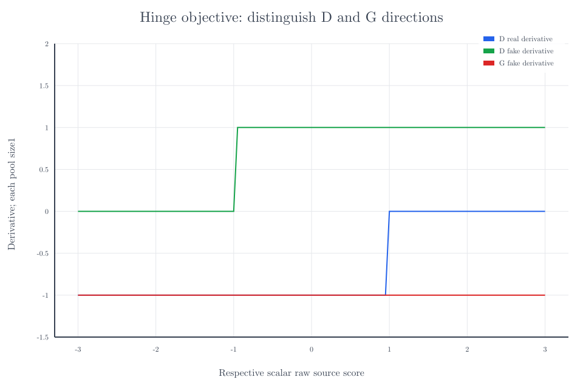
Check frozen VGG preprocessing and the exact feature-loss scale
The native extractor reverses RGB to BGR, multiplies by255 and subtracts (103.939,116.779,123.68), preserving the source Float32 rounding of those means. It applies the actual frozen3x3x3x64 kernel and64 biases without activation. The report loads the complete official32-array VGG19 convolution archive and selects its first convolution; a recorded extractor output or random substitute is not used. Kernel and bias paths always stop, while generated RGB paths stay live. The extracted target feature stops before activation/scaling.
SRGAN applies ReLU to each feature tensor, divides BOTH tensors by255, then computes MSE. The division therefore scales that MSE by255 squared; it is not a single division of the final MSE by255. ESRGAN divides both pre-activation features by255, then computes mean L1. The following supplied two-coordinate fixture makes the distinction explicit, without pretending to be pretrained data.
#include <dm/dm.hpp>
int main() {
namespace n = dm::nn;
auto t = n::DType::Float64;
auto bgr = n::models::VggImageNetInput(n::tensor({1., 0., .5}, {1, 1, 1, 3}, t));
auto predicted = n::tensor({-2., 4.}, {2}, t), truth = n::tensor({-1., 2.}, {2}, t);
auto sr = n::mean(n::square(n::relu(predicted) / 255. - n::relu(truth) / 255.));
auto esr = n::mean(n::abs(predicted / 255. - truth / 255.));
if (std::abs(sr.item() - 2. / 65025) > 1e-15 || std::abs(esr.item() - 1.5 / 255.) > 1e-15)
throw std::runtime_error("feature loss scaling");
std::print(
"| Supplied fixture | Native value |\n|---|---|\n| RGB(1,0,.5) to source-rounded BGR input | "
"{} |\n| post-ReLU feature MSE after both /255 | {} |\n| pre-activation feature mean L1 "
"after both /255 | {} |\n",
bgr.values_str(),
sr.item(),
esr.item());
}| Supplied fixture | Native value |
|---|---|
| RGB(1,0,.5) to source-rounded BGR input | [[[[23.561, -116.779, 131.32]]]] |
| post-ReLU feature MSE after both /255 | 3.075740099961553e-05 |
| pre-activation feature mean L1 after both /255 | 0.0058823529411764705 |
Check CRD shuffle with supplied channel indices
SRGAN packs output channels as c*r*r+dy*r+dx. For two channels and scale2, packed indices0..7 become spatial pixels(0,4),(1,5),(2,6),(3,7), in row-major pixel order. The native shuffle uses reshape/transpose, with live gradients. It does not interchange the channel and subpixel axes.
#include <dm/dm.hpp>
int main() {
namespace n = dm::nn;
auto x = n::reshape(n::arange(0, 8, 1, n::DType::Float64), {1, 1, 1, 8}).requires_grad_();
auto y = n::models::SRPixelShuffle(x, 2, 2);
if (y.to_vector<double>() != std::vector<double>{0, 4, 1, 5, 2, 6, 3, 7})
throw std::runtime_error("source CRD order");
auto matrix = n::reshape(y, {4, 2});
auto p = dm::graphics::RPlot::create();
p.y_limits(-.5, 11)
.points(
{0, 1, 2, 3}, n::select(matrix, 1, 0).to_vector<double>(), "Channel0", {37, 99, 235}, 5)
.points(
{0, 1, 2, 3}, n::select(matrix, 1, 1).to_vector<double>(), "Channel1", {220, 38, 38}, 5)
.x_label("Output spatial pixel, row-major order")
.y_label("Supplied packed input-channel index")
.title("CRD keeps each channel's four subpixels together")
.save_svg("build/asr_shuffle_toy.svg");
}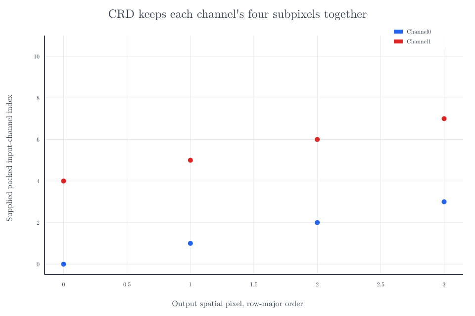
Capture BN moments before writing weights, then commit them explicitly
SRGAN normalizes with live population moments in its training path, while saved-statistic inference reads detached moving values. Five layers capture four-channel means and source-rounded unbiased variances. Captures are detached and do not update state. After the G weight write, the caller commits old*double(float32(.9))+captured*double(1-float32(.9)). Moments must come from that same pre-write G capture, rather than a recomputed forward after the write.
For supplied values1,3,5,7, batch mean4 and population variance5 produce an unbiased estimate near20/3. Starting saved mean0/variance1, the candidate mean is near.4 and variance1.5667. The example shows batch normalization and saved inference before/after the explicit commit. The reusable primitive itself has no affine gamma/beta; the SR generator applies its learned affine terms afterward.
#include <dm/dm.hpp>
int main() {
namespace n = dm::nn;
n::ParameterStore stats(0, n::DType::Float64);
auto x = n::tensor({1., 3., 5., 7.}, {4, 1}, stats.dtype());
auto capture = n::capture_batch_norm(stats, "toy", x, true);
auto before = n::capture_batch_norm(stats, "toy", x, false).value;
if (stats.at("toy/moving_mean").item() != 0)
throw std::runtime_error("capture does not write");
auto next = n::batch_norm_moving_values(
stats.at("toy/moving_mean"),
stats.at("toy/moving_var"),
capture.mean.detach(),
capture.unbiased_variance.detach());
stats.set("toy/moving_mean", next.mean);
stats.set("toy/moving_var", next.variance);
auto after = n::capture_batch_norm(stats, "toy", x, false).value;
auto p = dm::graphics::RPlot::create();
p.y_limits(-2, 12)
.points({0, 1, 2, 3}, capture.value.to_vector<double>(), "Live batch", {37, 99, 235}, 5)
.points({0, 1, 2, 3}, before.to_vector<double>(), "Saved before", {220, 38, 38}, 5)
.points({0, 1, 2, 3}, after.to_vector<double>(), "Saved after", {22, 163, 74}, 5)
.x_label("Supplied observation index")
.y_label("Normalized value, no learned affine terms")
.title("Read-only capture and explicit moving-statistic commit are separate")
.save_svg("build/asr_bn_toy.svg");
}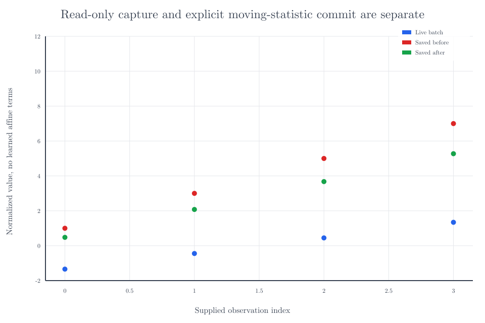
Retain opposite-pool means in relativistic-average derivatives
[Jolicoeur-Martineau, The relativistic discriminator: a key element missing from standard GAN (2018)](https://arxiv.org/abs/1807.00734) motivates comparing real and generated scores relatively. This source uses rr=real-mean(fake) and rf=fake-mean(real), with LIVE opposite-pool means. ESRGAN D is .5*(mean softplus(-rr)+mean softplus(rf)); G reverses both signs, with the same half. Unequal positive pool sizes are supported by the reusable native loss. A common score shift cancels up to floating rounding.
The supplied real(-2,0,3),fake(-1,2) fixture compares correct G score partials with a diagnostic that stops both means. The correct total score partial sums to zero under a common shift. The stopped-mean control changes the derivatives while leaving the forward loss unchanged; it is not used during fitting.
#include <dm/dm.hpp>
int main() {
namespace n = dm::nn;
auto t = n::DType::Float64;
auto r = n::tensor({-2., 0., 3.}, {3, 1}, t).requires_grad_(),
f = n::tensor({-1., 2.}, {2, 1}, t).requires_grad_();
auto o = n::models::RelativisticAverageGan(r, f);
auto correct = n::grad(o.generator, {r, f});
auto stopped = .5 * (n::mean(n::softplus(r - n::mean(f).detach())) +
n::mean(n::softplus(-(f - n::mean(r).detach()))));
auto wrong = n::grad(stopped, {r, f});
if (std::abs(n::sum(correct[0]).item() + n::sum(correct[1]).item()) > 1e-14)
throw std::runtime_error("common-shift derivative");
auto flatten = [](const std::vector<n::Tensor>& x) {
return n::concat({n::reshape(x[0], {-1}), n::reshape(x[1], {-1})}, 0).to_vector<double>();
};
auto p = dm::graphics::RPlot::create();
p.y_limits(-.7, .8)
.points({0, 1, 2, 4, 5}, flatten(correct), "Live means", {37, 99, 235}, 5)
.points({0, 1, 2, 4, 5}, flatten(wrong), "Stopped control", {220, 38, 38}, 5)
.x_label("Real score coordinates0/1/2, fake coordinates4/5")
.y_label("G adversarial partial with respect to each supplied score")
.title("Both cross-pool derivatives are part of the relativistic loss")
.save_svg("build/asr_relative_toy.svg");
}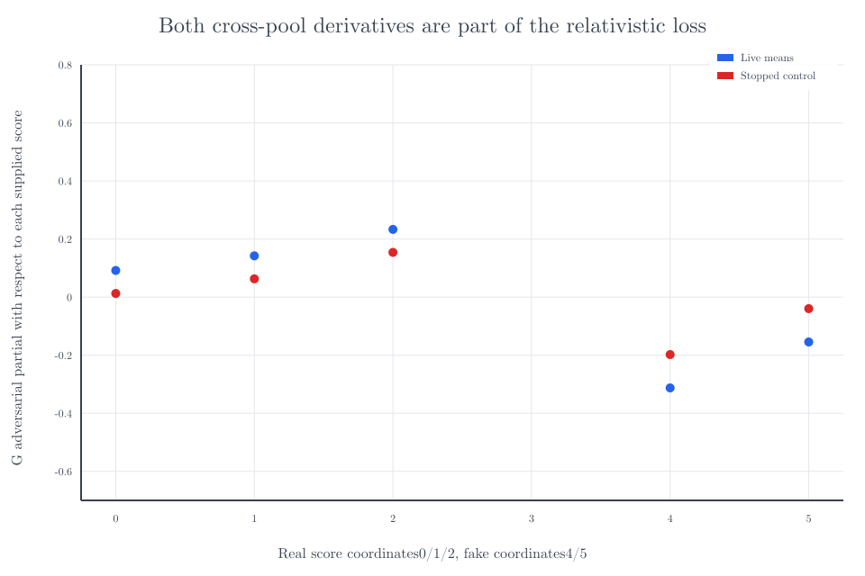
Trace both native residual generators and the image-only critic
SRGAN uses a fan-in-uniform3→4 head/PReLU, two bias-free convolution/BN/PReLU residual blocks, body convolution/BN with global head skip, packed4→16 up convolution, CRD shuffle2 and PReLU. ESRGAN uses three sequential five-conv blocks, each four growth2 leaky maps followed by a four-channel tail and.2 residual scaling. Its source-specific body input is head+.2*last_block, then body-tail convolution plus a global head skip, nearest2, up/HR leaky convolutions. These two source adaptations and the bicubic IMAGE shortcut remain explicit. Both output kernels use normal(.001), biases zero; other kernels use the source Float32 fan-in bound. The traces execute the native APIs and verify counts.
#include <dm/dm.hpp>
int main() {
namespace n = dm::nn;
namespace m = n::models;
n::ParameterStore g(7001), stats(0);
n::Module model(
[&](const n::Tensor& lr) {
auto bic = m::SRBicubic(lr, 32, 32);
n::model_stage("Bicubic image shortcut", lr, bic);
auto o = m::AdversarialSRGenerate(g, stats, lr, bic, false, false);
n::model_stage("Head3 to4", lr, o.head);
n::model_stage("Two BN residuals and global skip", o.head, o.body);
n::model_stage("Pack4 to16", o.body, o.packed);
n::model_stage("CRD shuffle2", o.packed, o.shuffled);
n::model_stage("Up PReLU4", o.shuffled, o.upsampled);
n::model_stage("Small output conv4 to3", o.upsampled, o.residual);
return n::model_stage(
"Bicubic + image residual", std::vector<n::Tensor>{bic, o.residual}, o.image);
},
"SRGAN: unbounded residual over bicubic");
n::ModelPlotOptions options;
options.style = n::ModelPlotStyle::Flow;
options.detail = n::ModelPlotDetail::Blocks;
options.sizing.minimum_extent = 2;
options.sizing.max_planes = 4;
auto figure = model.plot(n::ones({1, 16, 16, 3}), options);
if (figure.parameter_count() != 1591 || g.size() != 25 || stats.count() != 40)
throw std::runtime_error("executed native G census");
figure.save_svg("build/asr_srgan_architecture.svg");
}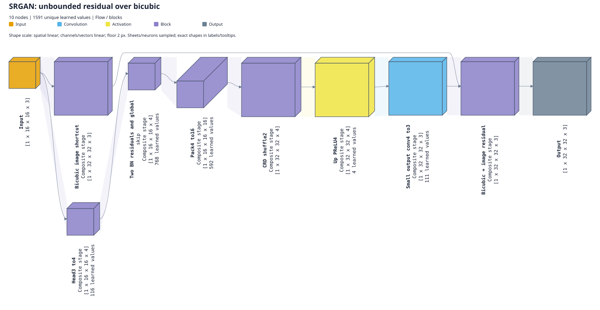
#include <dm/dm.hpp>
int main() {
namespace n = dm::nn;
namespace m = n::models;
n::ParameterStore g(7001), stats(0);
n::Module model(
[&](const n::Tensor& lr) {
auto bic = m::SRBicubic(lr, 32, 32);
n::model_stage("Bicubic image shortcut", lr, bic);
auto o = m::AdversarialSRGenerate(g, stats, lr, bic, true, false);
n::model_stage("Head3 to4", lr, o.head);
n::model_stage("Three dense blocks and global skip", o.head, o.body);
n::model_stage("Nearest2 + up conv/leaky", o.body, o.upsampled);
n::model_stage("HR conv/leaky", o.upsampled, o.packed);
n::model_stage("Small output conv4 to3", o.packed, o.residual);
return n::model_stage(
"Bicubic + image residual", std::vector<n::Tensor>{bic, o.residual}, o.image);
},
"ESRGAN: unbounded residual over bicubic");
n::ModelPlotOptions options;
options.style = n::ModelPlotStyle::Flow;
options.detail = n::ModelPlotDetail::Blocks;
options.sizing.minimum_extent = 2;
options.sizing.max_planes = 4;
auto figure = model.plot(n::ones({1, 16, 16, 3}), options);
if (figure.parameter_count() != 3511 || g.size() != 40 || stats.count() != 0)
throw std::runtime_error("executed native G census");
figure.save_svg("build/asr_esrgan_architecture.svg");
}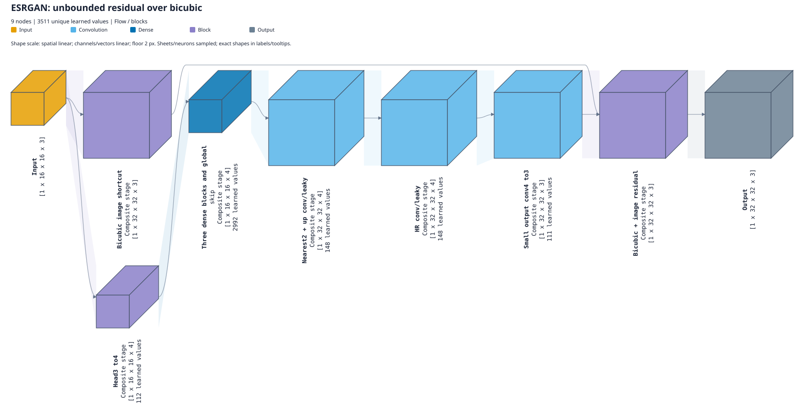
The shared critic architecture is head3→4/leaky.2, two4x4/stride2 maps to8 channels/leaky.2, global spatial mean and raw score1. The ordinary SRGAN score head is Glorot dense with bias,1673 values/8 leaves. ESRGAN uses a bias-free 8x1 kernel with bound sqrt(6.f/9),1672/7. The trace below executes that relative variant. Neither critic uses BN or sigmoid.
#include <dm/dm.hpp>
int main() {
namespace n = dm::nn;
n::ParameterStore d(7013);
n::Module model(
[&](const n::Tensor& image) { return n::models::AdversarialSRDiscriminate(d, image, true); },
"ESRGAN critic: raw bias-free score after global mean");
n::ModelPlotOptions options;
options.style = n::ModelPlotStyle::Flow;
options.detail = n::ModelPlotDetail::Layers;
options.sizing.minimum_extent = 2;
options.sizing.max_planes = 4;
auto f = model.plot(n::ones({1, 32, 32, 3}), options);
if (f.parameter_count() != 1672 || d.size() != 7)
throw std::runtime_error("relative D census");
f.save_svg("build/asr_critic_architecture.svg");
}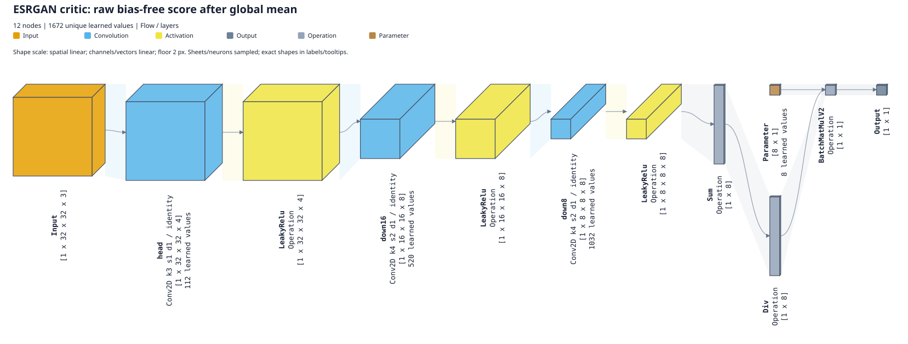
Run the complete native warm-up, reset and adversarial schedule
CIFAR-10 rows0..127 of data_batch_1.bin fit the models; rows128..159 validate; test_batch.bin rows64..95 provide the32 test cases, with source IDs50064..50095. The native CIFAR fetch/reader and native style preparation supply original data and the complete official VGG archive. Existing prepared caches are reused; missing style features invoke prepare_example_data("style"). No Python data preparation, other checkout or recorded-feature fallback is required.
Native antialiased Keys bicubic(a=-.5,half-pixel,symmetric duplicated edges) forms32→16 LR and16→32 shortcut images. Column and row passes each sum in Double and cast to Float32; overshoot is preserved. Both trials initialize fresh G7001/D7013/stats0 and batch order7103. Every epoch has16 batches of8, visiting all128 fitting rows. Epoch1 steps G pixel loss only, leaving D completely frozen. Before epoch2, BOTH Adam states reset without changing weights or BN statistics. Epochs2/3 step D then fresh G on each batch. Adam is(.0001,.9,.999,1e-8). Each variant therefore has48 cumulative G writes and32 D writes, but final optimizer counters32/32. BN commits occur after each SRGAN G write using its same pre-write moments, including warm-up. There is no generator weight EMA.
GAN G is content+.001*adversarial for SRGAN; ESRGAN uses content+.005*adversarial +.01*pixel L1, preserving source Float32-rounded coefficients. Warm-up G is pixel MSE/L1. Every component still evaluates in both phases. Each forward exposes saved-statistic inference AND batch-statistic training G; objectives use the training image even in read-only validation. The target extracted feature is stopped; its HR pixel/real-critic paths stay live. Validation is recorded every epoch, but selection stays fixed at epoch3. Deployment uses the saved-statistic prediction, which is LR-only and immutable. The HR-target canary must leave BOTH G paths bit exact.
The complete editable program below owns every capture/write/reset/BN commit. It saves all original outputs and all515 source phase/probe captures, checks frozen features and unselected owners, restores independent stores and preserves the original RGB preview. Its extra per-image metric arrays use the same native metric policy as the source; no model selection is based on test results.
#include <dm/dm.hpp>
namespace nn = dm::nn;
namespace m = nn::models;
namespace sr = m;
namespace data = nn::data;
using nn::Tensor;
using Arrays = std::map<std::string, Tensor>;
const std::vector<std::string> BNNames{
"residual0/bn1",
"residual0/bn2",
"residual1/bn1",
"residual1/bn2",
"body_bn"};
void Require(bool ok, const std::string& why) {
if (!ok)
throw std::runtime_error(why);
}
void Near(double a, double b, double tolerance, const std::string& why) {
Require(std::abs(a - b) <= tolerance, why);
}
void RequireFinite(const Arrays& a, const std::string& why) {
for (const auto& [key, value] : a)
Require(nn::all(nn::is_finite(value)).item<bool>(), why + " " + key);
}
void SaveArrays(const std::string& path, const Arrays& a) {
nn::save_npz(path, nn::NamedTensors(a.begin(), a.end()));
}
bool BitEqual(const Tensor& a, const Tensor& b) {
return nn::equal_bits(a, b);
}
bool BitEqual(const Arrays& a, const Arrays& b) {
if (a.size() != b.size())
return false;
for (const auto& [k, v] : a)
if (!b.count(k) || !BitEqual(v, b.at(k)))
return false;
return true;
}
double MaxAbsDiff(const Tensor& a, const Tensor& b) {
return nn::max(nn::abs(nn::cast(a, nn::DType::Float64) - nn::cast(b, nn::DType::Float64))).item();
}
void AppendMoments(Arrays& out, const Tensor& means, const Tensor& vars) {
if (means.defined())
for (int i = 0; i < 5; ++i) {
out.emplace("moment/" + BNNames[i] + "/mean", nn::select(means, 0, i));
out.emplace("moment/" + BNNames[i] + "/unbiased_var", nn::select(vars, 0, i));
}
}
Arrays Fields(const m::AdversarialSROutput& o, bool debug) {
Arrays all{
{"prediction", o.prediction},
{"prediction_training", o.prediction_training},
{"residual", o.residual},
{"real_score", o.real_score},
{"fake_score", o.fake_score},
{"fake_inference_score", o.fake_inference_score},
{"d_loss", o.d_loss},
{"g_loss", o.g_loss},
{"gan_loss", o.gan_loss},
{"pixel_loss", o.pixel_loss},
{"content_loss", o.content_loss},
{"adversarial_loss", o.adversarial_loss},
{"relative_real", o.relative_real},
{"relative_fake", o.relative_fake},
{"prediction_feature", o.prediction_feature},
{"target_feature", o.target_feature},
{"packed", o.packed},
{"shuffled", o.shuffled}};
AppendMoments(all, o.moments_mean, o.moments_unbiased_variance);
Arrays out;
for (const auto& [k, v] : all)
if (debug || !(k.starts_with("moment/") || k == "prediction_feature" || k == "target_feature" ||
k == "packed" || k == "shuffled"))
out.emplace(k, v);
return out;
}
void Initialize(
nn::ParameterStore& g,
nn::ParameterStore& d,
nn::ParameterStore& s,
const Tensor& w,
const Tensor& b,
bool enhanced) {
nn::NoGradGuard guard;
auto lr = nn::zeros({2, 16, 16, 3}), hr = nn::zeros({2, 32, 32, 3});
m::AdversarialSR(g, d, s, lr, hr, hr, w, b, enhanced, false);
}
Arrays Snapshot(const std::vector<nn::ParameterStore*>& p) {
Arrays out;
for (int k = 0; k < 3; ++k)
for (const auto& name : p[k]->names())
out.emplace(std::to_string(k) + "/" + name, p[k]->at(name).detach().clone());
return out;
}
void Restore(const std::vector<nn::ParameterStore*>& p, const std::string& file) {
auto a = nn::load_npz(file);
std::size_t count = 0;
for (auto* owner : p)
count += owner->size();
Require(a.size() == count, "complete learned and BN checkpoint");
for (const auto& [key, v] : a) {
Require(
key.size() > 2 && key[0] >= '0' && key[0] <= '2' && key[1] == '/',
"known source checkpoint owner");
auto& owner = *p[key[0] - '0'];
Require(
owner.contains(key.substr(2)) && owner.at(key.substr(2)).shape() == v.shape(),
"known matching source checkpoint leaf");
owner.set(key.substr(2), v);
}
}
namespace {
double Value(const Arrays& a, const std::string& key) {
return a.at(key).item();
}
/// Unequal-batch RaGAN fixture: closed-form partials and common logit-shift invariance.
void RaAlgebra(const std::filesystem::path& root) {
Tensor real = nn::tensor({-2, 0, 3}, {3, 1}), fake = nn::tensor({-1, 2}, {2, 1});
real.requires_grad_();
fake.requires_grad_();
const auto loss = m::RelativisticAverageGan(real, fake);
nn::GradOptions o;
o.retain_graph = true;
const auto dg = nn::grad(loss.discriminator, {real, fake}, o);
const auto gg = nn::grad(loss.generator, {real, fake}, o);
const auto shifted = m::RelativisticAverageGan(real.detach() + 5.0, fake.detach() + 5.0);
Near(
loss.discriminator.item(),
shifted.discriminator.item(),
3e-7,
"Ra D common logit shift invariance");
Near(loss.generator.item(), shifted.generator.item(), 3e-7, "Ra G common logit shift invariance");
SaveArrays(
(root / "relativistic_algebra.npz").string(),
{{"real", real.detach()},
{"fake", fake.detach()},
{"d_loss", loss.discriminator.detach()},
{"g_loss", loss.generator.detach()},
{"relative_real", loss.real_relative.detach()},
{"relative_fake", loss.fake_relative.detach()},
{"d_real_gradient", dg[0]},
{"d_fake_gradient", dg[1]},
{"g_real_gradient", gg[0]},
{"g_fake_gradient", gg[1]}});
std::cout << "RaGAN algebra: D=" << loss.discriminator.item() << ", G=" << loss.generator.item()
<< ", dG/dreal=" << gg[0].values_str() << '\n';
}
/// 8 test crops (20x20 centre at 4x): bicubic | prediction | HR | 8 |Y error| (red).
void Preview(const sr::SRData& data, const Tensor& prediction, const std::filesystem::path& path) {
auto crop = [](const Tensor& x) { return sr::SRCrop(nn::slice_axis(x, 0, 0, 8), 6); };
const auto p = crop(prediction), truth = crop(data.hr), bic = crop(data.bicubic);
const auto error = 8. * nn::abs(sr::SRLumaTensor(p) - sr::SRLumaTensor(truth));
auto zero = nn::zeros_like(error);
auto tiles = nn::concat(
{nn::cast(bic, nn::DType::Float64),
nn::cast(p, nn::DType::Float64),
nn::cast(truth, nn::DType::Float64),
nn::concat({error, zero, zero}, 3)},
2);
auto bytes = nn::cast(nn::floor(255. * nn::clip(tiles, 0., 1.) + .5), nn::DType::Float32);
auto image = nn::reshape(bytes, {1, 160, 80, 3});
image = nn::squeeze(nn::resize_nearest(image, {640, 320}), {0});
nn::save_png(image, path.string(), 0, 255);
}
void Train(
const std::filesystem::path& root,
const std::vector<sr::SRData>& pools,
const Arrays& features,
int epochs,
bool enhanced,
const std::string& init) {
const auto dir = root / (enhanced ? "esrgan" : "srgan");
const char* label = enhanced ? "ESRGAN" : "SRGAN";
std::filesystem::create_directories(dir);
const auto probe_root = root / (enhanced ? "esrgan" : "srgan");
std::filesystem::create_directories(probe_root / "phases");
nn::ParameterStore g(7001), d(7013), stats(0);
std::vector<nn::ParameterStore*> stores{&g, &d, &stats};
const auto vgg_w = features.at("block1_conv1_W").detach().clone(),
vgg_b = features.at("block1_conv1_b").detach().clone();
Initialize(g, d, stats, vgg_w, vgg_b, enhanced);
std::vector<std::unique_ptr<nn::Optimizer>> optimizers(2);
nn::OptimizerConfig config;
config.kind = nn::OptimizerKind::Adam;
config.beta1 = .9;
config.beta2 = .999;
config.epsilon = 1e-8;
auto reset_optimizers = [&]() {
for (int k = 0; k < 2; ++k)
optimizers[k] = std::make_unique<nn::Optimizer>(*stores[k], .0001, config);
};
reset_optimizers();
auto forward = [&](const Tensor& x, const Tensor& hr, const Tensor& bic, bool phase) {
return m::AdversarialSR(g, d, stats, x, hr, bic, vgg_w, vgg_b, enhanced, phase);
};
auto evaluate = [&](const Tensor& x, const Tensor& hr, bool phase, bool debug = false) {
nn::NoGradGuard guard;
return Fields(forward(x, hr, sr::SRBicubic(x, 32, 32), phase), debug);
};
auto capture = [&](int group, const Tensor& x, const Tensor& hr, bool phase) {
// This fresh forward ensures a GAN G capture observes the just-updated critic.
auto o = forward(x, hr, sr::SRBicubic(x, 32, 32), phase);
nn::GradOptions options;
options.allow_unused = true;
auto partial = nn::grad(group ? o.d_loss : o.g_loss, stores[group]->parameters(), options);
Arrays out;
for (std::size_t i = 0; i < partial.size(); ++i) {
auto name = stores[group]->names()[i];
out.emplace(
std::to_string(group) + "/" + name,
partial[i].defined()
? partial[i]
: nn::zeros(stores[group]->at(name).shape(), stores[group]->dtype()));
}
if (group == 0)
AppendMoments(out, o.moments_mean, o.moments_unbiased_variance);
return out;
};
auto apply = [&](int group, const Arrays& captured) {
std::vector<Tensor> ordered;
for (const auto& name : stores[group]->names())
ordered.push_back(captured.at(std::to_string(group) + "/" + name));
optimizers[group]->step(ordered); // Weight write FIRST, using the selected capture.
if (group == 0 && !enhanced) {
nn::NoGradGuard guard;
for (const auto& name : BNNames) {
auto next = nn::batch_norm_moving_values(
stats.at(name + "/moving_mean"),
stats.at(name + "/moving_var"),
captured.at("moment/" + name + "/mean"),
captured.at("moment/" + name + "/unbiased_var"));
stats.set(name + "/moving_mean", next.mean);
stats.set(name + "/moving_var", next.variance);
}
} // Same pre-weight-write moments, never a post-write recomputation.
};
auto check_frozen = [&]() {
Require(
BitEqual(vgg_w, features.at("block1_conv1_W")) &&
BitEqual(vgg_b, features.at("block1_conv1_b")),
"all1792 official feature values stay exact");
};
auto counters = [&](const std::string& file) {
SaveArrays(
file,
{{"iterations",
nn::tensor(
{double(optimizers[0]->iterations()), double(optimizers[1]->iterations())},
{2},
nn::DType::Int64)}});
};
if (!init.empty())
Restore(
stores,
(std::filesystem::path(init) / (enhanced ? "esrgan" : "srgan") / "initial_arrays.npz")
.string());
Require(
g.count() == (enhanced ? 3511 : 1591) && d.count() == (enhanced ? 1672 : 1673) &&
stats.count() == (enhanced ? 0 : 40),
"compact SRGAN/ESRGAN parameter census");
const auto initial = Snapshot(stores);
SaveArrays((dir / "initial_arrays.npz").string(), initial);
SaveArrays((dir / "initial_outputs.npz").string(), evaluate(pools[2].lr, pools[2].hr, false));
check_frozen();
nn::BatchOrder order(128, 8, 7103);
int gsteps = 0, dsteps = 0;
std::ofstream history(dir / "history.tsv"), batches(dir / "batches.tsv");
history.precision(17);
history << "epoch\tadversarial_phase\tg_loss\tgan_loss\tpixel_loss\tcontent_loss\tadversarial_"
"loss\td_loss\n";
batches << "epoch\tstep\trow\n";
Tensor first_lr, first_hr;
const auto started = std::chrono::steady_clock::now();
for (int epoch = 1; epoch <= epochs; ++epoch) {
const bool gan = epoch >= 2;
if (epoch == 2) {
const auto before = Snapshot(stores);
counters((probe_root / "probe-reset-before.npz").string());
reset_optimizers();
counters((probe_root / "probe-reset-after.npz").string());
SaveArrays((probe_root / "probe-reset-weights.npz").string(), Snapshot(stores));
Require(
BitEqual(before, Snapshot(stores)),
"warmup-to-GAN optimizer RESET never changes weights/BN");
}
order.begin_epoch();
int epoch_step = 0;
for (;;) {
const auto rows = order.next();
if (rows.empty())
break;
const Tensor x = sr::SRBatch(pools[0].lr, rows), y = sr::SRBatch(pools[0].hr, rows);
if (epoch_step == 0 && (epoch == 1 || epoch == 2)) {
const auto name = epoch == 1 ? "warm" : "gan";
SaveArrays(
(probe_root / (std::string("probe-") + name + "-input.npz")).string(),
{{"lr", x}, {"hr", y}});
SaveArrays(
(probe_root / (std::string("probe-") + name + "-forward.npz")).string(),
evaluate(x, y, gan, true));
if (epoch == 2)
SaveArrays((probe_root / "probe-stale-gan-g.npz").string(), capture(0, x, y, true));
}
if (gan && epoch_step == 0 && epoch == 2)
first_lr = x, first_hr = y;
for (int group : gan ? std::vector<int>{1, 0} : std::vector<int>{0}) {
const auto captured = capture(group, x, y, gan);
const auto before = Snapshot(stores);
const auto name = "epoch" + std::to_string(epoch) + "-batch" + std::to_string(epoch_step) +
(group ? "-d" : "-g");
SaveArrays((probe_root / "phases" / (name + "-gradient.npz")).string(), captured);
apply(group, captured);
SaveArrays((probe_root / "phases" / (name + "-after.npz")).string(), Snapshot(stores));
counters((probe_root / "phases" / (name + "-iterations.npz")).string());
if (!enhanced && epoch == 1 && epoch_step == 0) {
nn::NoGradGuard guard;
auto recomputed = Fields(forward(x, y, sr::SRBicubic(x, 32, 32), gan), true);
Arrays moments;
for (const auto& [key, value] : recomputed)
if (key.starts_with("moment/"))
moments.emplace(key, value);
SaveArrays((probe_root / "probe-poststep-recomputed-moments.npz").string(), moments);
}
const auto after = Snapshot(stores);
for (const auto& [key, value] : before) {
const int owner = key[0] - '0';
if (owner != group && !(group == 0 && owner == 2))
Require(
BitEqual(value, after.at(key)),
"SR phase isolation / frozen D during warmup / G during D");
}
(group ? dsteps : gsteps)++;
}
for (auto row : rows)
batches << epoch << '\t' << gsteps - 1 << '\t' << row << '\n';
++epoch_step;
}
Require(epoch_step == 16, "16 cheap fit batches / epoch");
if (!gan) {
const auto after = Snapshot(stores);
for (const auto& [key, value] : initial)
if (key[0] == '1')
Require(
BitEqual(value, after.at(key)),
"critic COMPLETELY untrained during reconstruction warmup");
}
check_frozen();
SaveArrays(
(probe_root / ("probe-epoch" + std::to_string(epoch) + ".npz")).string(), Snapshot(stores));
SaveArrays(
(probe_root / ("probe-epoch" + std::to_string(epoch) + "-test.npz")).string(),
evaluate(pools[2].lr, pools[2].hr, gan));
const auto v = evaluate(pools[1].lr, pools[1].hr, gan);
SaveArrays(
(probe_root / ("probe-epoch" + std::to_string(epoch) + "-validation.npz")).string(), v);
history << epoch << '\t' << gan;
for (auto key :
{"g_loss", "gan_loss", "pixel_loss", "content_loss", "adversarial_loss", "d_loss"})
history << '\t' << Value(v, key);
history << '\n';
std::cout << label << " epoch " << epoch << ": " << (gan ? "GAN" : "reconstruction-warmup")
<< ", pixel/content/adv=" << Value(v, "pixel_loss") << '/' << Value(v, "content_loss")
<< '/' << Value(v, "adversarial_loss") << std::endl;
}
const double seconds =
std::chrono::duration<double>(std::chrono::steady_clock::now() - started).count();
const auto checkpoint = (dir / "final.npz").string();
SaveArrays(checkpoint, Snapshot(stores));
SaveArrays((dir / "final_first_forward.npz").string(), evaluate(first_lr, first_hr, true));
for (int group = 0; group < 2; ++group)
SaveArrays(
(dir / ("final_gradients_group" + std::to_string(group) + ".npz")).string(),
capture(group, first_lr, first_hr, true));
nn::ParameterStore restored_g(1), restored_d(2), restored_stats(3);
Initialize(restored_g, restored_d, restored_stats, vgg_w, vgg_b, enhanced);
std::vector<nn::ParameterStore*> restored{&restored_g, &restored_d, &restored_stats};
Restore(restored, checkpoint);
nn::NoGradGuard inference_guard;
auto deployed_evaluate = [&](const Tensor& x, const Tensor& hr, bool phase) {
return Fields(
m::AdversarialSR(
restored_g,
restored_d,
restored_stats,
x,
hr,
sr::SRBicubic(x, 32, 32),
vgg_w,
vgg_b,
enhanced,
phase),
false);
};
auto predict = [&](const Tensor& x) {
return m::AdversarialSRGenerate(
restored_g, restored_stats, x, sr::SRBicubic(x, 32, 32), enhanced)
.image;
};
Require(BitEqual(Snapshot(stores), Snapshot(restored)), "all SR weights + BN restore BIT EXACT");
const auto before = Snapshot(restored);
const auto output = deployed_evaluate(pools[2].lr, pools[2].hr, true);
const Tensor prediction = predict(pools[2].lr);
Require(
BitEqual(prediction, output.at("prediction")), "LR ONLY prediction without HR/phase exact");
const double parity =
MaxAbsDiff(predict(sr::SRBatch(pools[2].lr, {0})), sr::SRBatch(prediction, {0}));
Require(parity < 3e-6, "LR single/batch parity within FP32");
const auto canary = deployed_evaluate(pools[2].lr, nn::zeros(pools[2].hr.shape()), true);
Require(
BitEqual(canary.at("prediction"), prediction) &&
BitEqual(canary.at("prediction_training"), output.at("prediction_training")),
"changing ALL HR targets leaves BOTH G paths BIT EXACT");
SaveArrays(
(dir / "target_canary.npz").string(),
{{"prediction", canary.at("prediction")},
{"prediction_training", canary.at("prediction_training")},
{"content_loss", canary.at("content_loss")},
{"pixel_loss", canary.at("pixel_loss")}});
check_frozen();
Require(
BitEqual(before, Snapshot(restored)),
"immutable LR inference/evaluation/FROZEN pretrained features");
SaveArrays((dir / "outputs.npz").string(), output);
const auto score = sr::SRScore(prediction, pools[2]);
Preview(pools[2], prediction, dir / "comparison.png");
auto metric_images = sr::SRScoreImages(prediction, pools[2]);
auto per_mse = nn::mean(nn::square(metric_images[0] - metric_images[1]), {1, 2, 3}),
base_mse = nn::mean(nn::square(metric_images[2] - metric_images[1]), {1, 2, 3});
SaveArrays(
(dir / "probe-per-image-metrics.npz").string(),
{{"mse", per_mse},
{"psnr", sr::SRPSNRTensor(per_mse)},
{"ssim", sr::SRSSIMTensor(metric_images[0], metric_images[1])},
{"bicubic_psnr", sr::SRPSNRTensor(base_mse)},
{"bicubic_ssim", sr::SRSSIMTensor(metric_images[2], metric_images[1])}});
Require(
optimizers[0]->iterations() == 32 && optimizers[1]->iterations() == 32 && gsteps == 48 &&
dsteps == 32,
"cold-reset Adam counters versus cumulative writes");
std::ofstream meta(dir / "metrics.json");
meta.precision(17);
meta << "{\"enhanced\":" << (enhanced ? "true" : "false")
<< ",\"generator_parameters\":" << g.count() << ",\"discriminator_parameters\":" << d.count()
<< ",\"bn_state_values\":" << stats.count()
<< ",\"frozen_vgg_values\":1792,\"epochs\":" << epochs
<< ",\"warmup_epochs\":1,\"generator_updates\":" << gsteps
<< ",\"discriminator_updates\":" << dsteps << ",\"selected_epoch_fixed_final\":" << epochs
<< ",\"test_mean_psnr\":" << score.psnr << ",\"test_mean_ssim\":" << score.ssim
<< ",\"test_pooled_psnr\":" << sr::SRPSNR(score.mse)
<< ",\"bicubic_mean_psnr\":" << score.baseline_psnr
<< ",\"bicubic_mean_ssim\":" << score.baseline_ssim
<< ",\"single_batch_max_error\":" << parity;
for (auto key :
{"g_loss", "gan_loss", "pixel_loss", "content_loss", "adversarial_loss", "d_loss"})
meta << ",\"test_" << key << "\":" << Value(output, key);
meta << ",\"training_seconds\":" << seconds << "}\n";
Require(bool(meta) && bool(history) && bool(batches), "complete SRGAN records");
std::cout << label << ": all 32 test mean PSNR/SSIM=" << score.psnr << '/' << score.ssim
<< ", bicubic=" << score.baseline_psnr << '/' << score.baseline_ssim
<< "; frozen VGG/warmup+GAN/restore/LR only/target canary/immutable PASS (training "
<< seconds << " s)" << std::endl;
}
void Run(
const std::filesystem::path& data,
const std::filesystem::path& feature_path,
const std::filesystem::path& root,
int epochs,
const std::string& init) {
std::filesystem::create_directories(root);
const auto training = data::LoadCifar({data / "data_batch_1.bin"}, data::Cifar::k10),
testing = data::LoadCifar({data / "test_batch.bin"}, data::Cifar::k10);
Require(training.size() == 10000 && testing.size() == 10000, "canonical CIFAR binary sizes");
std::vector<sr::SRData> pools;
Arrays records;
for (int k = 0; k < 3; ++k) {
const int n = k == 0 ? 128 : 32, start = k == 0 ? 0 : k == 1 ? 128 : 64;
std::vector<std::int64_t> rows;
for (int i = 0; i < n; ++i)
rows.push_back(start + i);
const auto& source = k == 2 ? testing : training;
pools.push_back(sr::SRPairs(source.images, rows));
const std::string split = k == 0 ? "fit" : k == 1 ? "validation" : "test";
records.emplace(split + "_hr", pools.back().hr);
records.emplace(split + "_lr", pools.back().lr);
records.emplace(split + "_bicubic", pools.back().bicubic);
std::vector<std::int32_t> ids;
for (int i = 0; i < n; ++i)
ids.push_back(start + i + (k == 2 ? 50000 : 0));
records.emplace(split + "_source_ids", nn::from_vector(ids, {n}));
records.emplace(split + "_labels", nn::take_rows(source.labels, rows));
}
SaveArrays((root / "data.npz").string(), records);
Require(
std::filesystem::exists(feature_path),
feature_path.string() + " missing; pass features=PATH");
Arrays full;
for (auto& [k, v] : nn::load_npz(feature_path.string()))
full.emplace(k, v);
if (full.size() != 2)
Require(full.size() == 32, "original VGG19 convolution inventory");
Arrays features;
for (auto name : {"block1_conv1_W", "block1_conv1_b"})
features.emplace(name, nn::cast(full.at(name), nn::DType::Float32));
RequireFinite(features, "finite pretrained VGG filter");
SaveArrays((root / "frozen_features.npz").string(), features);
RaAlgebra(root);
Train(root, pools, features, epochs, false, init);
Train(root, pools, features, epochs, true, init);
std::cout << "Artifacts: " << root.string() << "\nAll srgan_esrgan checks passed.\n";
}
} // namespace
int main() {
auto root = std::filesystem::path(dm::datasets::data_home());
const auto data = dm::datasets::fetch("cifar10");
const auto feature = root / "style_transfer/vgg19.npz";
if (!std::filesystem::is_regular_file(feature))
dm::datasets::prepare_example_data("style");
Run(data, feature, "build/srgan_esrgan", 3, "");
}RaGAN algebra: D=1.12372, G=0.957052, dG/dreal=[[0.0918314], [0.142112], [0.233212]] SRGAN epoch 1: reconstruction-warmup, pixel/content/adv=0.00261826/0.00467923/0.698881 SRGAN epoch 2: GAN, pixel/content/adv=0.00260541/0.00462893/0.693675 SRGAN epoch 3: GAN, pixel/content/adv=0.00258949/0.00457098/0.694223 SRGAN: all 32 test mean PSNR/SSIM=26.7547/0.855841, bicubic=26.7112/0.854135; frozen VGG/warmup+GAN/restore/LR only/target canary/immutable PASS (training 2.24847 s) ESRGAN epoch 1: reconstruction-warmup, pixel/content/adv=0.0341665/0.0559572/0.693487 ESRGAN epoch 2: GAN, pixel/content/adv=0.0341431/0.0559087/0.693771 ESRGAN epoch 3: GAN, pixel/content/adv=0.0341156/0.0558486/0.694021 ESRGAN: all 32 test mean PSNR/SSIM=26.7389/0.855221, bicubic=26.7112/0.854135; frozen VGG/warmup+GAN/restore/LR only/target canary/immutable PASS (training 2.34437 s) Artifacts: build/srgan_esrgan All srgan_esrgan checks passed.
Inspect actual HR/LR-derived fitting pairs
The first16 fitting rows appear below as bicubic image followed by HR target. They are paired because LR is computed from the same HR observation; fitting, validation and test source IDs remain disjoint. All panels show the full32x32 RGB images enlarged3 times, with native four-pixel gray gaps.
#include <dm/dm.hpp>
namespace n = dm::nn;
namespace m = n::models;
using A = std::map<std::string, n::Tensor>;
A Read(const std::string& path) {
A a;
for (const auto& [key, value] : n::load_npz(path))
a.emplace(key, value);
return a;
}
int main() {
auto a = Read("build/srgan_esrgan/data.npz");
std::vector<n::Tensor> images;
for (int i = 0; i < 16; ++i) {
images.push_back(n::take_rows(a.at("fit_bicubic"), {i}));
images.push_back(n::take_rows(a.at("fit_hr"), {i}));
}
n::save_image_grid(n::concat(images, 0), "build/asr_pairs.png", 8, 0, 1, 4, 220 / 255., 3);
}Read validation losses with the phase and normalization path stated
The curves retain all three source validation records for each model. Content and adversarial components are computed even during epoch1 warm-up, while G uses only pixel loss then. From epoch2 G switches to the declared GAN objective; its scale differs across variants. SRGAN objectives use live validation-batch BN, while its deployed prediction uses saved statistics. Small adversarial losses are not perceptual-quality scores.
#include <dm/dm.hpp>
namespace n = dm::nn;
namespace m = n::models;
using A = std::map<std::string, n::Tensor>;
A Read(const std::string& path) {
A a;
for (const auto& [key, value] : n::load_npz(path))
a.emplace(key, value);
return a;
}
int main() {
auto p = dm::graphics::RPlot::create();
p.y_limits(0, 2.2);
for (int k = 0; k < 2; ++k) {
std::string name = k ? "esrgan" : "srgan";
std::vector<double> epoch, g, d;
for (int e = 1; e <= 3; ++e) {
auto a = Read(
"build/srgan_esrgan/" + name + "/probe-epoch" + std::to_string(e) + "-validation.npz");
epoch.push_back(e);
g.push_back(a.at("g_loss").item());
d.push_back(a.at("d_loss").item());
}
p.lines(
epoch,
g,
name + " G",
k ? dm::graphics::RGB{22, 163, 74} : dm::graphics::RGB{37, 99, 235},
2)
.lines(
epoch,
d,
name + " D",
k ? dm::graphics::RGB{147, 51, 234} : dm::graphics::RGB{220, 38, 38},
2);
}
p.x_label("Fixed epoch:1 pixel warm-up,2/3 GAN after cold Adam reset")
.y_label("Source validation objective, variant-specific scale")
.title("All validation losses; no test-based checkpoint selection")
.save_svg("build/asr_learning.svg");
}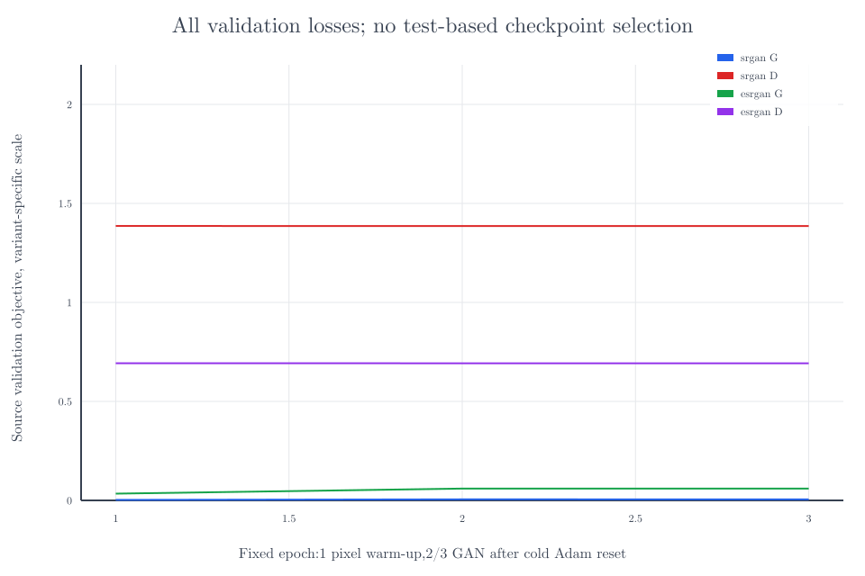
Distinguish cumulative writes from optimizer counters after the cold reset
The next plot reads all48 after-G phase counter records for SRGAN. G reaches16 during warm-up, resets to0, then ends at32 after its32 GAN steps. D stays0 during warm-up and also ends32. ESRGAN has the same counter trajectory. The independent audit reconstructs every Adam transition and confirms that keeping the warm-up moments instead would change the first GAN G write by up to .000184068(SRGAN) or.000194842(ESRGAN). A reset itself changes no model values.
#include <dm/dm.hpp>
namespace n = dm::nn;
namespace m = n::models;
using A = std::map<std::string, n::Tensor>;
A Read(const std::string& path) {
A a;
for (const auto& [key, value] : n::load_npz(path))
a.emplace(key, value);
return a;
}
int main() {
std::vector<double> x, g, d;
for (int epoch = 1; epoch <= 3; ++epoch)
for (int batch = 0; batch < 16; ++batch) {
std::string file = "phases/epoch" + std::to_string(epoch) + "-batch" + std::to_string(batch) +
"-g-iterations.npz";
auto a = Read("build/srgan_esrgan/srgan/" + file),
b = Read("build/srgan_esrgan/esrgan/" + file);
if (!n::equal_bits(a.at("iterations"), b.at("iterations")))
throw std::runtime_error("same declared counter schedule");
auto counter = a.at("iterations").to_vector<double>();
x.push_back(x.size() + 1);
g.push_back(counter[0]);
d.push_back(counter[1]);
}
auto p = dm::graphics::RPlot::create();
p.y_limits(-2, 52)
.lines(x, g, "G Adam counter", {37, 99, 235}, 2)
.lines(x, d, "D Adam counter", {220, 38, 38}, 2)
.x_label("Cumulative generator writes1..48; reset precedes write17")
.y_label("Actual optimizer iteration counter")
.title("48 G writes end at counter32 after an explicit cold reset")
.save_svg("build/asr_reset_counters.svg");
}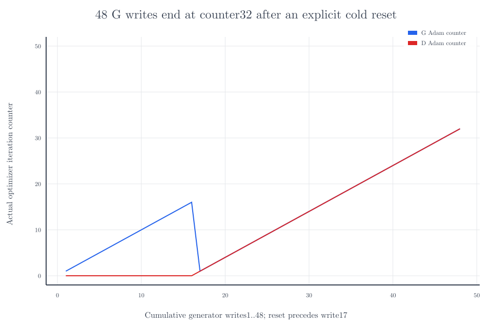
Preserve the original SRGAN RGB comparison
Each of the original eight test rows uses its central20x20 crop, enlarged4 times, with columns bicubic, saved-statistic prediction, HR target and8 times the absolute studio-range luminance error shown in red. Display clipping is performed after computing that raw error. The exact original PNG is retained; it contains no chosen best cases or added sharpening.
#include <dm/dm.hpp>
namespace n = dm::nn;
namespace m = n::models;
using A = std::map<std::string, n::Tensor>;
A Read(const std::string& path) {
A a;
for (const auto& [key, value] : n::load_npz(path))
a.emplace(key, value);
return a;
}
int main() {
std::filesystem::copy_file(
"build/srgan_esrgan/srgan/comparison.png",
"build/asr_srgan_comparison.png",
std::filesystem::copy_options::overwrite_existing);
}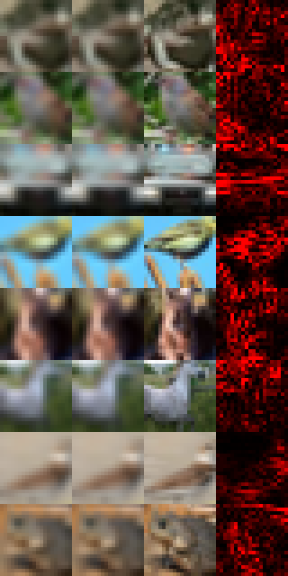
Preserve the original ESRGAN RGB comparison
Each of the original eight test rows uses its central20x20 crop, enlarged4 times, with columns bicubic, saved-statistic prediction, HR target and8 times the absolute studio-range luminance error shown in red. Display clipping is performed after computing that raw error. The exact original PNG is retained; it contains no chosen best cases or added sharpening.
#include <dm/dm.hpp>
namespace n = dm::nn;
namespace m = n::models;
using A = std::map<std::string, n::Tensor>;
A Read(const std::string& path) {
A a;
for (const auto& [key, value] : n::load_npz(path))
a.emplace(key, value);
return a;
}
int main() {
std::filesystem::copy_file(
"build/srgan_esrgan/esrgan/comparison.png",
"build/asr_esrgan_comparison.png",
std::filesystem::copy_options::overwrite_existing);
}Compare per-image PSNR gains, not just a pooled aggregate
Metrics use the common central20x20 crop, studio-range BT.601 luminance and clipping of estimated/bicubic luminance into[0,1]. Reference HR luminance is unclipped. The source reports the mean of32 per-image PSNRs and SSIMs; pooled PSNR from mean MSE is a different aggregate. SRGAN mean/pooled PSNR are 26.75467688/26.26674257 dB; ESRGAN26.73889463/26.25239098. Bicubic mean is 26.71119211 dB. Mean gains are only.04348477/.02770251 dB. The next plot keeps all32 per-image gains for each model, including negative improvements.
#include <dm/dm.hpp>
namespace n = dm::nn;
namespace m = n::models;
using A = std::map<std::string, n::Tensor>;
A Read(const std::string& path) {
A a;
for (const auto& [key, value] : n::load_npz(path))
a.emplace(key, value);
return a;
}
int main() {
auto p = dm::graphics::RPlot::create();
std::vector<std::vector<double>> gain;
double lo = 0, hi = 0;
for (const std::string name : {"srgan", "esrgan"}) {
auto a = Read("build/srgan_esrgan/" + name + "/probe-per-image-metrics.npz");
gain.push_back((a.at("psnr") - a.at("bicubic_psnr")).to_vector<double>());
for (double v : gain.back()) {
lo = std::min(lo, v);
hi = std::max(hi, v);
}
}
auto x = n::arange(0, 32, 1, n::DType::Float64).to_vector<double>();
double span = std::max(.02, hi - lo);
p.y_limits(lo - .15 * span, hi + .8 * span)
.points(x, gain[0], "SRGAN gain", {37, 99, 235}, 4)
.points(x, gain[1], "ESRGAN gain", {220, 38, 38}, 4)
.x_label("Test row index0..31, source IDs50064..50095")
.y_label("Per-image PSNR minus bicubic PSNR, dB")
.title("All32 held-out gains, including losses relative to bicubic")
.save_svg("build/asr_psnr_gains.svg");
}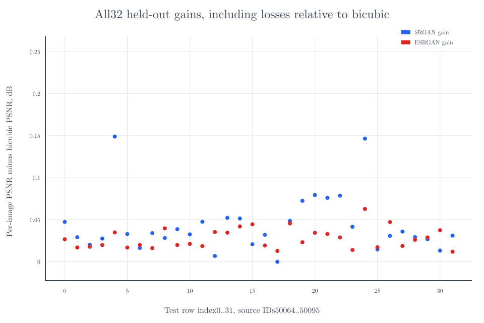
SSIM uses a normalized11x11 Gaussian window,sigma1.5,valid centers, C1=.0001,C2=.0009,population variances clamped at0 against roundoff and signed covariance. Mean SSIM is.85584107/.85522090 versus bicubic.85413543. The plot shows every per-image difference multiplied by1000 for readable display units; it does not drop negative differences or convert them into a quality claim.
#include <dm/dm.hpp>
namespace n = dm::nn;
namespace m = n::models;
using A = std::map<std::string, n::Tensor>;
A Read(const std::string& path) {
A a;
for (const auto& [key, value] : n::load_npz(path))
a.emplace(key, value);
return a;
}
int main() {
auto p = dm::graphics::RPlot::create();
std::vector<std::vector<double>> delta;
double lo = 0, hi = 0;
for (const std::string name : {"srgan", "esrgan"}) {
auto a = Read("build/srgan_esrgan/" + name + "/probe-per-image-metrics.npz");
delta.push_back(((a.at("ssim") - a.at("bicubic_ssim")) * 1000.).to_vector<double>());
for (double v : delta.back()) {
lo = std::min(lo, v);
hi = std::max(hi, v);
}
}
auto x = n::arange(0, 32, 1, n::DType::Float64).to_vector<double>();
double span = std::max(1., hi - lo);
p.y_limits(lo - .15 * span, hi + .8 * span)
.points(x, delta[0], "SRGAN delta", {37, 99, 235}, 4)
.points(x, delta[1], "ESRGAN delta", {220, 38, 38}, 4)
.x_label("Same32 test rows in source order")
.y_label("Per-image SSIM minus bicubic, multiplied by1000")
.title("Small SSIM changes retain their per-image variation")
.save_svg("build/asr_ssim_gains.svg");
}
Inspect every saved BN mean update and the distinct two-path predictions
The SRGAN trace below uses all48 after-G saved states, including warm-up. Each curve is the L2 norm of one layer's four-channel moving mean; it is a summary of that vector, not a plot of all variance coordinates. The independent audit checks every mean/variance write bit exactly. Recomputing moments after the first weight update changes captured moments by up to.00269955397, so the explicit commit uses the original capture. No optimizer owns those40 saved values.
#include <dm/dm.hpp>
namespace n = dm::nn;
namespace m = n::models;
using A = std::map<std::string, n::Tensor>;
A Read(const std::string& path) {
A a;
for (const auto& [key, value] : n::load_npz(path))
a.emplace(key, value);
return a;
}
int main() {
const std::vector<std::string> names{
"residual0/bn1", "residual0/bn2", "residual1/bn1", "residual1/bn2", "body_bn"};
std::vector<std::vector<double>> value(5);
double high = 0;
for (int e = 1; e <= 3; ++e)
for (int b = 0; b < 16; ++b) {
auto a = Read(
"build/srgan_esrgan/srgan/phases/epoch" + std::to_string(e) + "-batch" +
std::to_string(b) + "-g-after.npz");
for (int i = 0; i < 5; ++i) {
double v =
n::sqrt(
n::sum(
n::square(n::cast(a.at("2/" + names[i] + "/moving_mean"), n::DType::Float64))))
.item();
value[i].push_back(v);
high = std::max(high, v);
}
}
auto p = dm::graphics::RPlot::create();
auto x = n::arange(1, 49, 1, n::DType::Float64).to_vector<double>();
std::vector<dm::graphics::RGB> colors{
{37, 99, 235}, {220, 38, 38}, {22, 163, 74}, {147, 51, 234}, {217, 119, 6}};
std::vector<std::string> labels{"res0 bn1", "res0 bn2", "res1 bn1", "res1 bn2", "body bn"};
p.y_limits(-.01, high * 2 + .03);
for (int i = 0; i < 5; ++i)
p.lines(x, value[i], labels[i], colors[i], 2);
p.x_label("Cumulative G write1..48; saved BN state does not reset at17")
.y_label("L2 norm of each four-channel moving-mean vector")
.title("All48 explicit saved-moment commits, separate from Adam")
.save_svg("build/asr_bn_history.svg");
}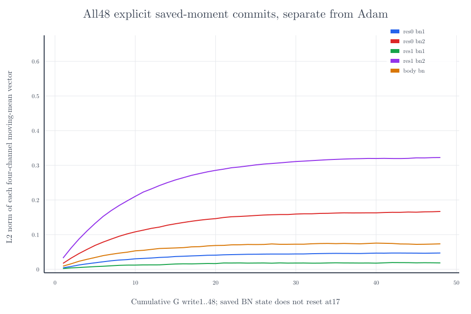
Read-only validation computes two SRGAN generator paths on the same held-out LR bank: the deployment prediction reads saved moving statistics, while prediction_training normalizes using that entire held-out batch. Both remain immutable and target-independent, but their pixels can differ. ESRGAN has no BN, so both paths are bit identical. The next figure retains the maximum within-image path difference for all32 test rows and both models.
#include <dm/dm.hpp>
namespace n = dm::nn;
namespace m = n::models;
using A = std::map<std::string, n::Tensor>;
A Read(const std::string& path) {
A a;
for (const auto& [key, value] : n::load_npz(path))
a.emplace(key, value);
return a;
}
int main() {
std::vector<std::vector<double>> values;
double high = 0;
for (const std::string name : {"srgan", "esrgan"}) {
auto a = Read("build/srgan_esrgan/" + name + "/outputs.npz");
auto v =
n::max(
n::reshape(n::abs(a.at("prediction") - a.at("prediction_training")), {32, 3072}), {1}) *
1000.;
values.push_back(v.to_vector<double>());
high = std::max(high, n::max(v).item());
if (name == "esrgan" && n::max(v).item() != 0)
throw std::runtime_error("no BN two-path identity");
}
auto p = dm::graphics::RPlot::create();
auto x = n::arange(0, 32, 1, n::DType::Float64).to_vector<double>();
p.y_limits(-.05, high * 1.8 + .1)
.lines(x, values[0], "SRGAN paths", {37, 99, 235}, 2)
.lines(x, values[1], "ESRGAN paths", {220, 38, 38}, 2)
.x_label("All32 held-out test rows in original order")
.y_label("Max saved-versus-batch pixel difference, multiplied by1000")
.title("Deployment pixels and batch-objective pixels are separate source fields")
.save_svg("build/asr_two_paths.svg");
}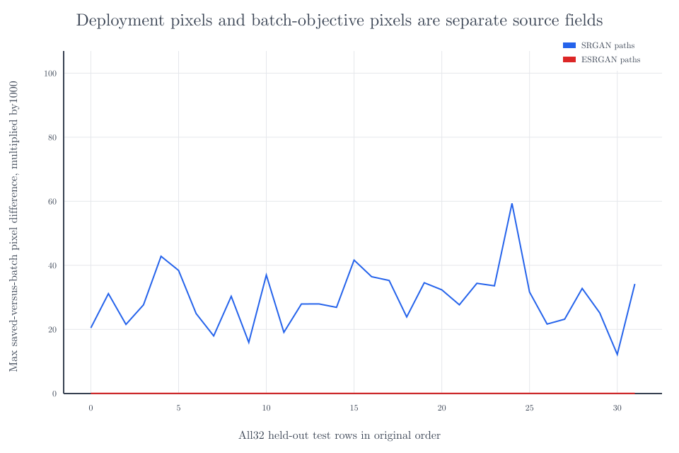
The independent NumPy audit checks362343 native parameter partials and captured moments(max8.06e-6),10013647 forward values(max1.88e-6),226 scalar finite differences, all160 Adam transitions bit exactly and every unselected-store/BN write. It reproduces1327104 HR/LR/bicubic pixels exactly and all768 fitting row visits. The original1792 feature values match the complete official VGG archive. All validation/final-test scalar records, target canaries, unequal-pool relativistic algebra, reset counters and per-image PSNR/SSIM calculations pass. Original19 archives contain3075843 exact values;515 phase/probe archives add 9487714 exact values. Both PNGs, four TSVs and non-timing metrics match exactly.
These fixed-final results provide only small improvements over bicubic under the stated luminance/crop metrics. They do not establish sharper perceptual textures, generalization beyond32 test images or paper-level performance. Canonical models and frozen-feature/relativistic operations live in the C++ API; Python/R expose the same owning fields and explicit captures. Full independent language fitting loops remain a separate migration task. Optional development oracle: scripts/check_adversarial_sr.py. Dataset preparation and all report numerical/graphics work use native datamunge APIs.